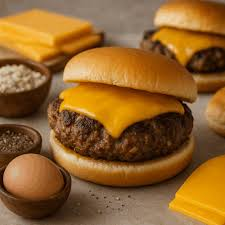

Home
Cheese Burger

Description:
A classic American favorite featuring a juicy beef patty, melted cheese, and fresh toppings nestled in a toasted bun.
Perfect for backyard barbecues or a quick, satisfying dinner.
Ingredients:
- Ground beef
- Cheddar cheese slices
- Hamburger buns
- Lettuce
- Tomato slices
- Onion slices
- Pickles
- Ketchup and Mustard
- Salt and pepper
Steps:
- Shape the ground beef into patties, slightly larger than the buns.
- Season both sides of the patties generously with salt and pepper.
- Heat a grill or frying pan over medium-high heat.
- Cook the patties for 3-4 minutes per side for medium doneness.
- During the last minute of cooking, place a slice of cheese on each patty and cover to melt.
- Toast the hamburger buns on the grill or in a toaster.
- Spread ketchup and mustard on the bottom bun.
- Place the cheesy patty on the bun.
- Top with lettuce, tomato, onion, and pickles.
- Close with the top bun and serve immediately.